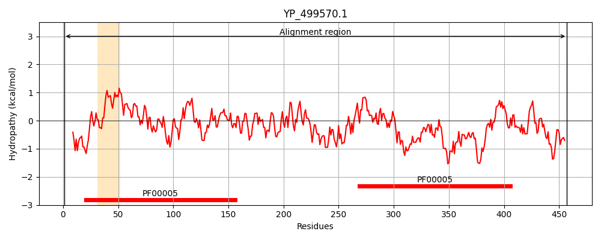
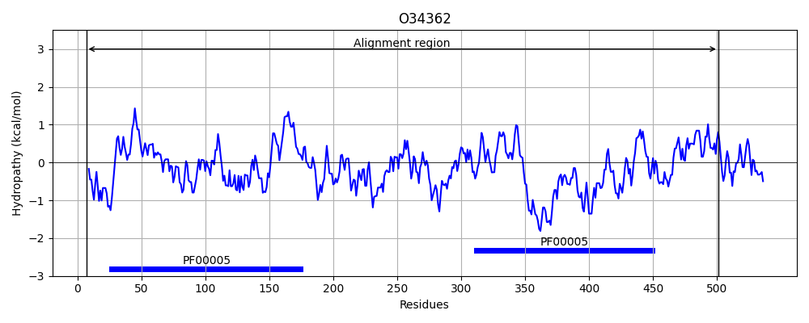
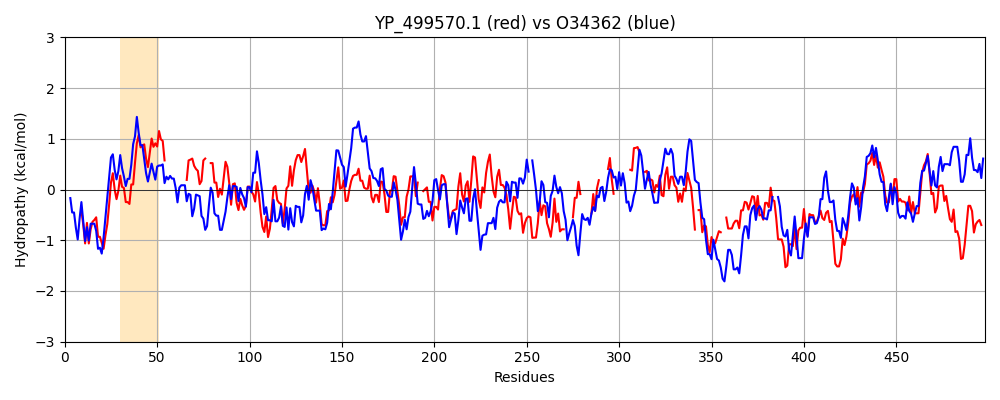

Hit Accession: O34362
Hit TCID: 3.A.1.30.1
Hit Description: gnl|BL_ORD_ID|7129 gnl|TC-DB|O34362|3.A.1.30.1 Putative HMP/thiamine import ATP-binding protein ykoD OS=Bacillus subtilis GN=ykoD PE=1 SV=1
Mach Len: 498
e:0.000000
Query TMS Count : 1
Hit TMS Count: 0
TMS-Overlap Score: 0.000000
Predicted Substrates:None
BLAST Alignment:
Score: 621 , Bit scores: 243 bits, E-value: 1.3e-74, Alignment length: 498, Percentage identity: 33
Query: 1 MLKVSDLRLKYPSGQRKIFDHLNITIQDKEKVLLLGPSGCGKSTLLNVLSGIVPN-----------LIELPMKYDEL--IVDPLSGVIFQDPDSQFCMPKVYEELAFVLENRQLPREDMDALIINALNMVNLNVTPETYIKDLSGGMKQKLAIVETILQQSKTLFLDEPTAMLDVQATEDLWTKLIELWEDQ--TVVIVEHKVKHIWNHVDRVILMDYNGNIIADECPEIILQKYVHLLSEYGVWHPRAWEFAPSRVDFPTTNSHLLQFKN----GRIIR-----GKSTL----LSFS--------DLEIGL--GEWITITGANGSGKTTLLESIMQLIKYQ-GDVYFENQRLTKI--KHAAKHMYLVYQNPELQFITNSVYDEINIHFNHLSKDQSDDETIQLLKLLDLQNVKDQHPYELSIGQKRRLSVATALSSKADIIFLDEPTFGLDSHNTFQLIKLFQKRINLGQSIVMVTHDDEIIERYPSRRLKISDGAL 457
+L V L Y ++ +F ++ +Q E VLLLGPSGCGKS+L L+G+ P L + P+ E + +GV+FQDPD QFCM V +E+AF LEN Q+P+E+M I L + + E I LSGG KQK+A+ + + + + LDEPT++LD + + + +L ++ +++++EH++ ++R I++D +G D + + Q L + G+ P+ ++ P T S + FK G + + G+S L LSF+ D+ L G + G NG+GK+TLL + L+K Q G + +Q L K K K M V+QNPE QF+T++VYDE + F + +++ + LL+ L ++ D HP+ +S GQKRRLSVAT L ++ LDEPTFG D+ + +++ Q+ G +++M+THD E++ Y L + D L
Sbjct: 7 LLTVEQLSFSYEEDEKPVFQDISFELQKGECVLLLGPSGCGKSSLALCLNGLYPEACDGIQSGHVFLFQKPVTDAETSETITQHAGVVFQDPDQQFCMLTVEDEIAFGLENLQIPKEEMTEKINAVLEKLRITHLKEKMISTLSGGQKQKVALACILAMEPELIILDEPTSLLDPFSAREFVHLMKDLQREKGFSLLVIEHQLDEWAPWIERTIVLDKSGKKALDGLTKNLFQHEAETLKKLGIAIPKVCHL-QEKLSMPFTLSKEMLFKEPIPAGHVKKKKAPSGESVLEVSSLSFARGQQAIFKDISFSLREGSLTALVGPNGTGKSTLLSVLASLMKPQSGKILLYDQPLQKYKEKELRKRMGFVFQNPEHQFVTDTVYDE--LLFGQKANAETEKKAQHLLQRFGLAHLADHHPFAISQGQKRRLSVATMLMHDVKVLLLDEPTFGQDARTAAECMEMIQRIKAEGTAVLMITHDMELVSSYADSVLVLHDTGL 501 | Protein Hydropathy Plots: |
|---|
|  |  |
Pairwise Alignment-Hydropathy Plot:
|
|---|
|  |